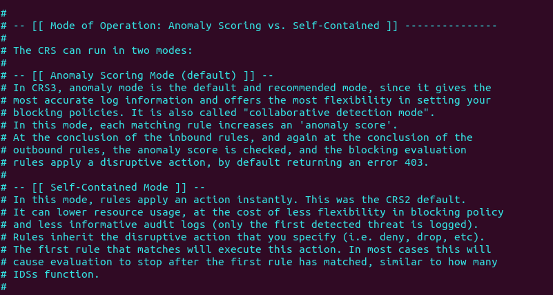
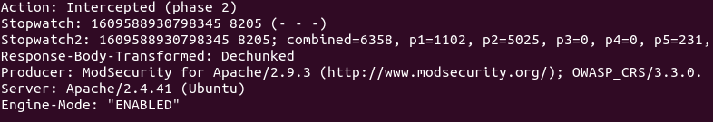
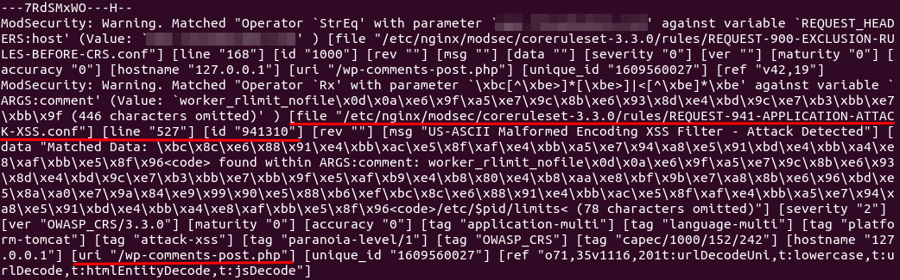
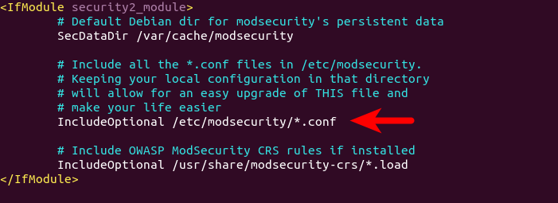
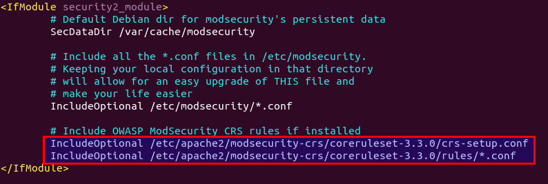

- Logs: Can be found at /var/log/apache2/modsec_audit.log - Modsecurity can be combined with Project-HoneypodHow to Disable ModSecurity for a Virtual Host
By default, ModSecurity is enabled for all Apache virtual hosts. If you want to disable ModSecurity for a specific virtual host, then edit the virtual host file (/etc/apache2/sites-enabled/example.com.conf) and add the following line to the <VirtualHost>...</VirtualHost> context.Reload Apache for the change to take effect.SecRuleEngine DetectionOnlysudo systemctl reload apache2How to Upgrade OWASP CRS
You need to upgrade the core rule set when a new version comes out. The process is straightforward.
sudo apache2ctl -tsudo systemctl restart apache2Let’s take a look at the CRS config file, which provides you with good documentation on how CRS works.You can see that OWASP CRS can run in two modes: self-contained mode. This is the traditional mode used in CRS v2.x. If an HTTP request matches a rule, ModSecurity will block the HTTP request immediately and stop evaluating remaining rules. anomaly scoring mode. This is the default mode used in CRS v3.x. ModSecurity will check an HTTP request against all rules, and add a score to each matching rule. If a threshold is reached, then the HTTP request is considered an attack and will be blocked. The default score for inbound requests is 5 and for outbound response is 4.  When running in anomaly scoring mode, there are 4 paranoia levels.sudo nano /etc/apache2/modsecurity-crs/coreruleset-3.3.0/crs-setup.conf
To check if ModSecurity is working, you can launch a simple SQL injection attack on your own website. (Please note that it’s illegal to do security testing on other people’s websites without authorization.) Enter the following URL in your web browser.If ModSecurity is working properly, your Apache web server should return a 403 forbidden error message. And in the audit log (/var/log/apache2/modsec_audit.log), you can see the following line in section H, which means ModSecurity detected and blocked this SQL injection attack by using OWASP CRS v3.3.0. Action: Intercepted (phase 2)  When ModSecurity runs in DetectionOnly mode, it won’t block this SQL injection attack.https://yourdomain.com/?id=3 or 'a'='a'Understanding Modsecurity Logs
It’s important to analyze the ModSecurity logs, so you will know what kind of attacks are directed to your web applications and take better actions to defend against threat actors. There are mainly two kinds of logs in ModSecurity:
sudo vim /etc/logrotate.d/modsecurity
/var/log/apache2/modsec_audit.log
{
rotate 14
daily
missingok
compress
delaycompress
notifempty
}
ModSecurity is a generic web application firewall and not designed for a specific web application. The OWASP core rule set is also a generic rule set with no particular application in mind, so it’s likely that you will see false positives after enabling ModSecurity and OWASP CRS. If you increase the paranoia level in the CRS, there will be more false positives. For example, by default, the CRS forbids Unix command injection like entering sudo on a web page, which is rather common on my blog. To eliminate false positives, you need to add rule exclusions to the CRS.Application-Specific Rule Exclusions
There are some prebuilt, application-specific exclusions shipped with OWASP CRS. Edit the crs-setup.conf file.Go to the Application Specific Rule Exclusions section and find the following lines.sudo nano /etc/apache2/modsecurity-crs/coreruleset-3.3.0/crs-setup.confFor instance, If I want to enable WordPress exclusions, the above lines should be changed to the following. Please be careful about the syntax. There should be no comments between t:none,\ and setvar:tx.crs_exclusions_wordpress=1". (The backslash \ character at the end indicates the next line is a continuation of the current line.)#SecAction \ # "id:900130,\ # phase:1,\ # nolog,\ # pass,\ # t:none,\ # setvar:tx.crs_exclusions_cpanel=1,\ # setvar:tx.crs_exclusions_drupal=1,\ # setvar:tx.crs_exclusions_dokuwiki=1,\ # setvar:tx.crs_exclusions_nextcloud=1,\ # setvar:tx.crs_exclusions_wordpress=1,\ # setvar:tx.crs_exclusions_xenforo=1"Save and close the file. Then test Apache configurations.SecAction \ "id:900130,\ phase:1,\ nolog,\ pass,\ t:none,\ setvar:tx.crs_exclusions_wordpress=1" # setvar:tx.crs_exclusions_cpanel=1,\ # setvar:tx.crs_exclusions_drupal=1,\ # setvar:tx.crs_exclusions_dokuwiki=1,\ # setvar:tx.crs_exclusions_nextcloud=1,\ # setvar:tx.crs_exclusions_xenforo=1"If the test is successful, restart Apache for the change to take effect.sudo apache2ctl -tNote that if you have multiple applications such as (WordPress, Nextcloud, Drupal, etc) installed on the same server, then the above rule exclusions will be applied to all applications. To minimize the security risks, you should enable a rule exclusion for one application only. To do that, go to the /etc/apache2/modsecurity-crs/coreruleset-3.3.0/rules/ directory.sudo systemctl restart apache2Rename the REQUEST-900-EXCLUSION-RULES-BEFORE-CRS file.cd /etc/apache2/modsecurity-crs/coreruleset-3.3.0/rules/Then edit this file.sudo mv REQUEST-900-EXCLUSION-RULES-BEFORE-CRS.conf.example REQUEST-900-EXCLUSION-RULES-BEFORE-CRS.confAdd the following line at the bottom of this file. If your WordPress is using the blog.yourdomain.com sub-domain and the request header sent from visitor’s browser contains this sub-domain, then ModSecurity will apply the rule exclusions for WordPress. SecRule REQUEST_HEADERS:Host "@streq blog.yourdomain.com" "id:1000,phase:1,setvar:tx.crs_exclusions_wordpress=1" If you have installed Nextcloud on the same server, then you can also add the following line in this file, so if a visitor is accessing your Nextcloud sub-domain, ModSecurity will apply the Nextcloud rule exclusions. SecRule REQUEST_HEADERS:Host "@streq nextcloud.yourdomain.com" "id:1001,phase:1,setvar:tx.crs_exclusions_nextcloud=1" Save and close this file. Then test Apache configurations.sudo nano REQUEST-900-EXCLUSION-RULES-BEFORE-CRS.confIf the test is successful, rstart Apache for the change to take effect.sudo apache2ctl -tsudo systemctl restart apache2Custom Rule Exclusions
Enabling the prebuilt application-specific rule exclusions might not eliminate all false positives. If so, you need to examine the ModSecurity audit log (/var/log/apache2/modsec_audit.log), check which rule caused the false positive and add your custom rule exclusions in the REQUEST-900-EXCLUSION-RULES-BEFORE-CRS.conf file. Section H in the audit log tells you which rule is matched. For example, If I try to use the <code>...</code> HTML in the comment form, ModSecurity blocks my comment. The following log tells me that the HTTP request matched a rule in REQUEST-941-APPLICATION-ATTACK-XSS.conf (line 527). The rule ID is 941310. The request URI is /wp-comments-post.php.  It’s detected as malformed encoding XSS filter attack. However, I want users to be able to use the <code>...</code> and <pre>...</pre> HTML tag in the comment form, so I created a rule exclusion. Add the following line at the bottom of the REQUEST-900-EXCLUSION-RULES-BEFORE-CRS.conf file.This line tells ModSecurity that if the request URI is /wp-comments-post.php, then don’t apply rule ID 941310. Save and close the file. Then test Apache configurations.SecRule REQUEST_URI "@streq /wp-comments-post.php" "id:1002,phase:1,ctl:ruleRemoveById=941310"If a false positive matches multiple rule IDs, you can add rule exclusions in one line like so:sudo apache2ctl -t # If the test is successful, restart Apache for the change to take effect. sudo systemctl restart apache2Note: It’s not recommended to disable too many rules of level 1 in the OWASP CRS, as it will make your website be hacked much more easily. Only disable rules if you know what you are doing.SecRule REQUEST_URI "@streq /wp-admin/post.php" "id:1003,phase:1,ctl:ruleRemoveById=941160,ctl:ruleRemoveById=941310,ctl:ruleRemoveById=942100"
If you want to disable ModSecurity for your own IP address, but leave it enabled for all other IP addresses, then add the following custom rule in the REQUEST-900-EXCLUSION-RULES-BEFORE-CRS.conf file. Replace 12.34.56.78 with your real IP address.To whitelist a subnet, use the following syntax, which will whitelist the 10.10.10.0/24 network.SecRule REMOTE_ADDR "@ipMatch 12.34.56.78" "id:1004,phase:1,allow,ctl:ruleEngine=off"SecRule REMOTE_ADDR "@ipMatch 10.10.10.10/24" "id:1005,phase:1,allow,ctl:ruleEngine=off"#Save and close the file. Then test Apache configurations. sudo apache2ctl -t #If the test is successful, restart Apache for the change to take effect. sudo systemctl restart apache2Chaining Rules
If your Apache has multiple virtual hosts, you may want to whitelist your IP address for a specific virtual host. You need to chain two rules like so:The chain keyword at the end of the first rule indicates that the ruleEngine=off action will only be taken if the condition in the next rule is also true.SecRule REMOTE_ADDR "@ipMatch 12.34.56.78" "id:1004,phase:1,allow,ctl:ruleEngine=off,chain" SecRule REQUEST_HEADERS:Host "@streq nextcloud.yourdomain.com" "t:none"
The ModSecurity module for Apache is included in the default Debian/Ubuntu repository. To install it, runThen enable this module.sudo apt install libapache2-mod-security2Restart Apache for the change to take effect.sudo a2enmod security2sudo systemctl restart apache2Step 2: Configure ModSecurity
In the /etc/apache2/mods-enabled/security2.conf configuration file, you can find the following line. IncludeOptional /etc/modsecurity/*.conf  This means Apache will include all the *.conf files in /etc/modsecurity/ directory. We need to rename the modsecurity.conf-recommended file to make it work.Then edit this file with a command-line text editor like Nano.sudo mv /etc/modsecurity/modsecurity.conf-recommended /etc/modsecurity/modsecurity.confFind the following line. SecRuleEngine DetectionOnly This config tells ModSecurity to log HTTP transactions, but takes no action when an attack is detected. Change it to the following, so ModSecurity will detect and block web attacks. SecRuleEngine On Then find the following line (line 186), which tells ModSecurity what information should be included in the audit log. SecAuditLogParts ABDEFHIJZ However, the default setting is wrong. You will know why later when I explain how to understand ModSecurity logs. The setting should be changed to the following. SecAuditLogParts ABCEFHJKZ Save and close the file. Then restart Apache for the change to take effect. (Reloding the web server isn’t enough.)sudo nano /etc/modsecurity/modsecurity.confsudo systemctl restart apache2Step 3: Install the OWASP Core Rule Set (CRS)
To make ModSecurity protect your web applications, you need to define rules to detect malicious actors and block them. For beginners, it’s a good idea to install existing rule sets, so you can get started quickly and then learn the nitty-gritty down the road. There are several free rule sets for ModSecurity. The OWASP Core Rule Set (CRS) is the standard rule set used with ModSecurity. - It's free, community-maintained and the most widely used rule set that provides a sold default configuration for ModSecurity. - It contains rules to help stop common attack vectors, including SQL injection (SQLi), cross-site scripting (XSS), and many others. - It can integrate with Project Honeypot. - It also contains rules to detect bots and scanners. - It has been tuned through wide exposure to have very few false positives. When installing ModSecurity from the default Debian/Ubuntu repository, the modsecurity-crs package is also installed as a dependency. This package contains the OWASP core rule set version 3.x. However, it can become out of date. If you care about security, you should use the latest version of core rule set. Download the latest OWASP CRS from GitHub.Extract the file.wget https://github.com/coreruleset/coreruleset/archive/v3.3.0.tar.gzCreate a directory to store CRS files.tar xvf v3.3.0.tar.gzMove the extracted directory to /etc/apache2/modsecurity-crs/.sudo mkdir /etc/apache2/modsecurity-crs/Go to that directory.sudo mv coreruleset-3.3.0/ /etc/apache2/modsecurity-crs/Rename the crs-setup.conf.example file.cd /etc/apache2/modsecurity-crs/coreruleset-3.3.0/Edit the /etc/apache2/mods-enabled/security2.conf file.sudo mv crs-setup.conf.example crs-setup.confFind the following line, which loads the default CRS files. IncludeOptional /usr/share/modsecurity-crs/*.load Change it to the following, so the latest OWASP CRS will be used. IncludeOptional /etc/apache2/modsecurity-crs/coreruleset-3.3.0/crs-setup.conf IncludeOptional /etc/apache2/modsecurity-crs/coreruleset-3.3.0/rules/*.conf  Save and close the file. Then test Apache configuration.sudo nano /etc/apache2/mods-enabled/security2.confIf the syntax is OK, then restart Apache.sudo apache2ctl -tsudo systemctl restart apache2